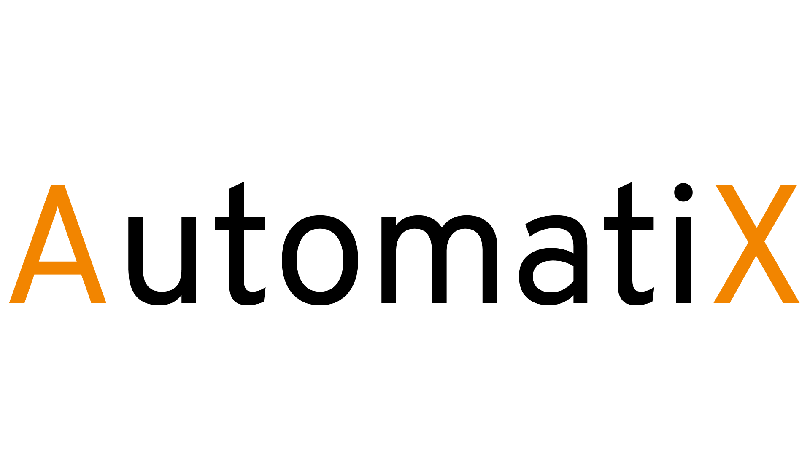

El plan estandar está diseñado para las pequeñas empresas con necesidades básicas, que deseen dar el salto a la era digital
200.00€

El plan personalizado es para las empresas que necesiten robots AutomatiX con funcionalidades específicas el precio dependerá de la complejidad.
Desde 300.00€
Desarrollamos plataformas customizables, a medida y modulares que se ajustan a las necesidades de una gran variedad de sectores.
Diseñamos y fabricamos soluciones altamente integradas y confiables para el sector servicios e industrial, así como para instituciones de investigación de referencia a nivel mundial.
AutomatiX comenzó en 2020, cuando un pequeño grupo de ingenieros construyó el primer robot humanoide bípedo completamente autónomo de Europa.
Contamos con un equipo con más de 15 años de experiencia en I+D, hoy somos conocidos por nuestros robots móviles que se usan en investigación, tareas de intralogística,
automatización de inventario y aplicaciones sociales para empresas, instituciones y laboratorios de I+D de todo el mundo.
Para satisfacer las necesidades básicas y dar el paso a la digitalización
AutomatiX se compromete a iniciar el salto a la era digital gracias a los nuevos robots inteligentes tratando de robotizar el trabajo industrial.
Queremos favorecer a las empresas con más rápidez y, a la vez, proteger a los trabajadores de los posibles incidentes en los almacenes.
Tratamos de satisfacer tanto las necesidades básicas para realizar tareas sencillas como las más complejas para tareas más exigentes
que necesiten una inteligencia artificial para su realización.
Podemos nombrar algunas ventajas de esta robotización: mayor precisión en las operativas, incremento de la productividad y eficacia, mayor seguridad y posibilidad de colaboración con los operarios.
En definitiva, se trata de una de las estrategias más efectivas para cumplir el triple objetivo de reducir costes operacionales, mejorar la calidad del servicio y aumentar así la eficacia global de la instalación de almacenaje.